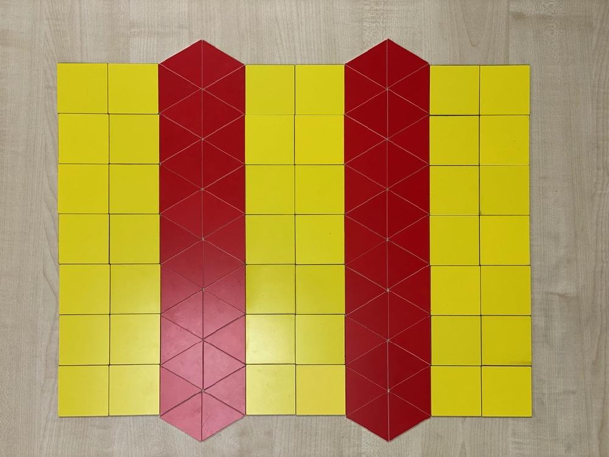
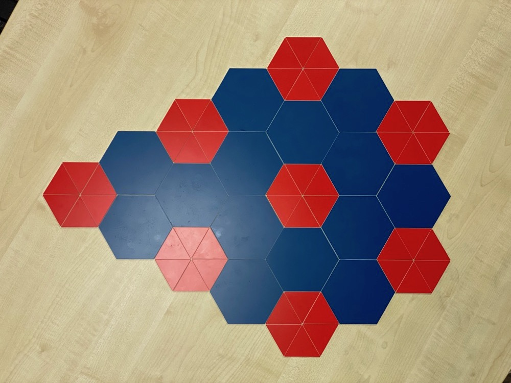
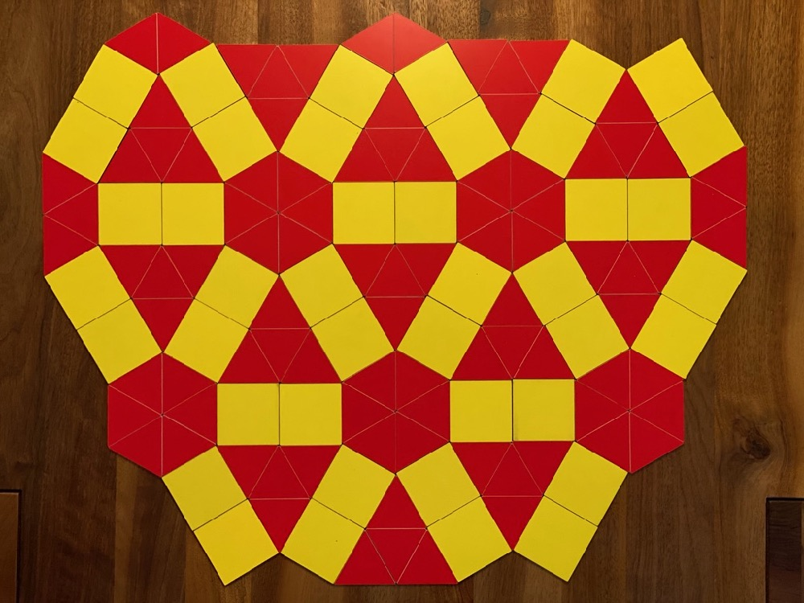
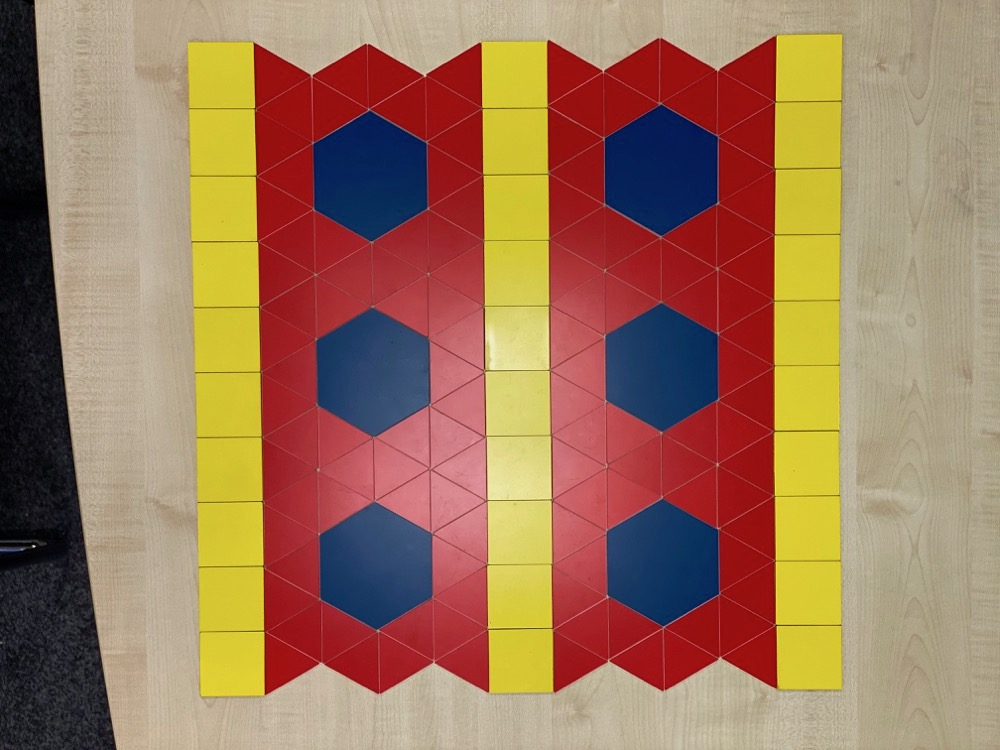

Geometrische Muster gibt es überall. Zum Beispiel bei den Mosaiken im Aachener Dom, auf Tapeten, Vorhängen, Geschenkpapier, in der Straßenpflasterung oder als Bildschirmhintergrund am Computer. Manche von diesen Mustern sind schon tausende von Jahren alt, denn schon die alten Ägypter haben ihre Vasen und Grabkammern mit Mustern dekoriert.
Aber wie viele verschiedene Muster gibt es eigentlich?
Gibt es unendlich viele und kann man immer neue Muster erfinden?
   